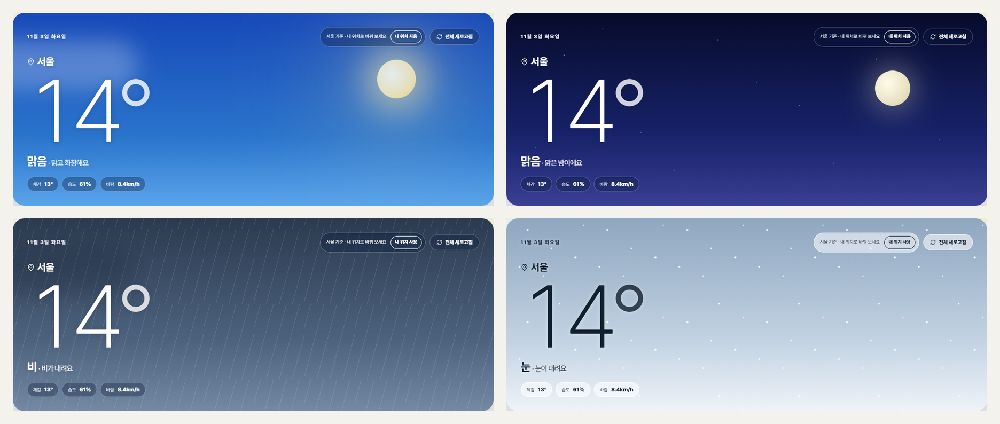
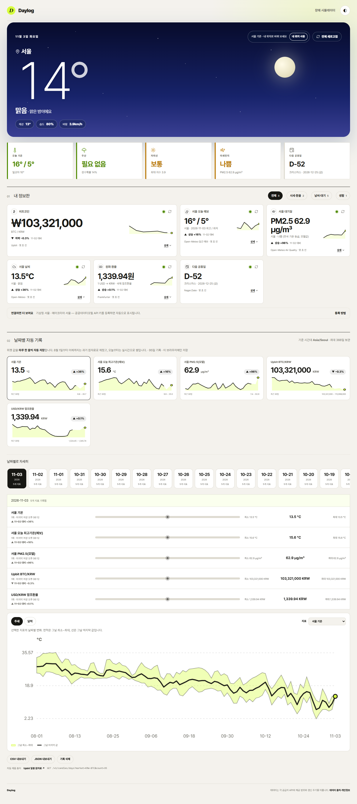
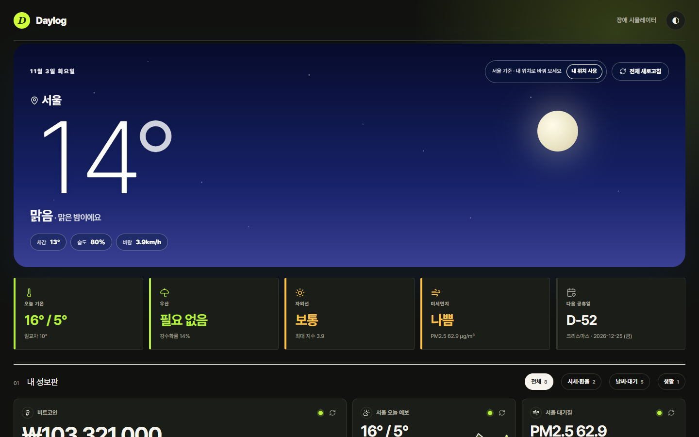
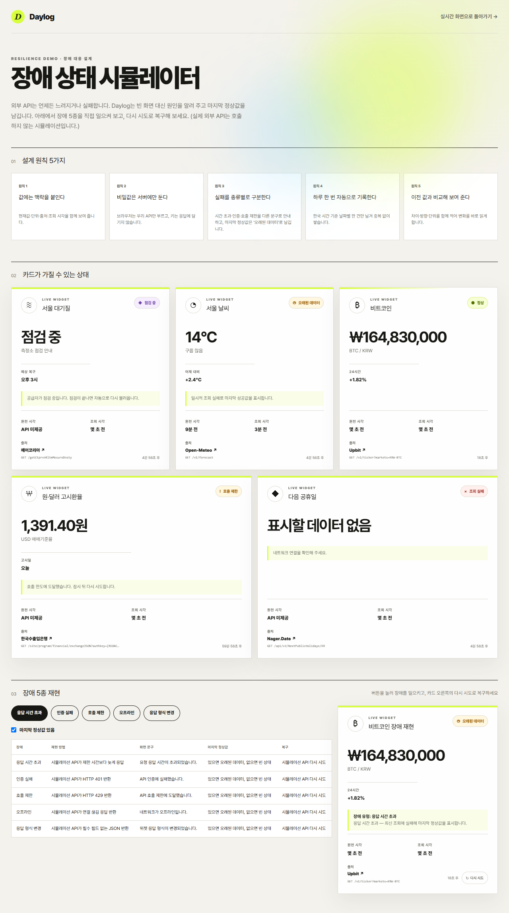
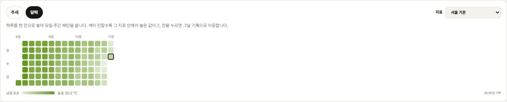
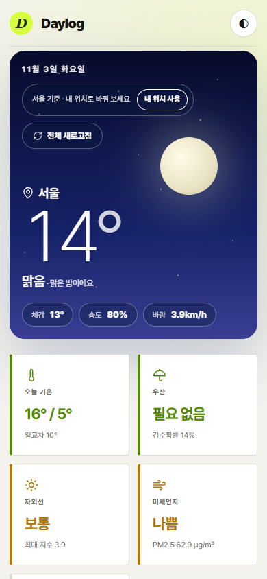

데이터의 출처와 시각을 숨기지 않는,
프론트엔드 복원력 중심의 일일 브리핑 보드
Daylog는 불확실성이 높은 원격 근무자를 위해 외부 API 장애 속에서도 마지막 정상값을 지켜내며, RFC 5861 기반 Stale Fallback과 성능 최적화(-93% TBT)를 달성한 엔터프라이즈급 프론트엔드 아키텍처 쇼케이스입니다.
제품 개요 및 타깃 페르소나
불확실성이 높은 원격 근무자 및 IT 지식 노동자를 위해 출근/업무 시작 전 1분 안에 날씨·공기질과 거시지표(환율·가상자산)의 변동성을 한눈에 파악하는 경량 모닝 루틴 브리핑 보드입니다.
기존 대시보드 UI의 치명적 결함
- 출처와 시각의 은닉: 화면에 숫자만 띄울 뿐 어느 기관 공식 API인지, 원천 데이터 관측 시각이 언제인지 알 수 없어 묵은 데이터를 최신값으로 오인.
- 외부 장애 시 전체 붕괴: 단 하나의 외부 API만 타임아웃에 걸려도 대시보드 전체가 백화(White-out)되거나 크래시 발생.
- 강제 권한 요구 & 프라이버시 침해: 첫 진입 시 위치 권한을 강제 팝업하고, 개인 열람 기록을 중앙 서버 DB에 무분별하게 수집.
Daylog가 엔지니어링으로 해결한 방식
- 투명한 데이터 신선도 (Provenance): 출처 링크, 원천 관측 시각, 클라이언트 조회 시각, KST 기준 시각, 데이터 신선도 배지 전면 공개.
- RFC 5861 Stale Fallback: 장애를 5종으로 정밀 분류하고, 서버 장애 시에도 마지막 정상값(Last Known Good)을 유지.
- 프라이버시 우선 원칙: 위치 권한 사전 강제 없음, 사용자 일일 기록은 브라우저 localStorage에 완결 저장 및 JSON 백업 지원.
🤖 Human-in-the-Loop AI 엔지니어링 협업 체계
AI 코딩 에이전트를 단순 코드 생성기가 아닌 '고속 구현 서브에이전트'로 지휘하고, 인간 엔지니어가 '시니어 아키텍트이자 통제자'로서 도메인 계약 설계, 3D 차트의 WebGL GPU 병목 폐기, O(n²) 탐색 최적화를 직접 주도했습니다. AI 생성물의 퇴행을 방어하기 위해 132건의 테스트 자동화 게이트를 구축하여 전수 통과를 필수 조건으로 검증했습니다.
시스템 아키텍처 및 보안 설계
브라우저의 외부 직호출을 100% 차단하는 BFF(Backend for Frontend) 패턴을 적용하여 인증키 유출 방지, CORS 회피, 캐시 공유, 장애 흡수를 서버에서 일원화했습니다.
텍스트 기반 ASCII 아키텍처 다이어그램 보기 (펼치기)
🔒 3대 보안 및 안정성 설계 원칙
1. Zero Direct Client Call
브라우저가 외부 API를 직접 호출하지 않습니다. 공공데이터 인증키 유출, CORS 에러, HTTPS 환경의 Mixed Content 문제를 원천 차단했습니다.
2. Unified Data Contract
공급자마다 제각각인 원본 스키마를 단 하나의 엄격한 인터페이스 WidgetData<T>로 정규화하여 프론트엔드 UI의 결합도를 최소화했습니다.
3. Graceful Fallback Chain
서버에 키가 없거나 런타임 통신 실패 시에도 앱이 크래시되지 않고 국제 공개 공급자(Frankfurter, Open-Meteo)로 자동 승계되어 503 오류가 발생하지 않습니다.
핵심 기능 및 인터랙티브 프리뷰
실시간 기상 감응 애니메이션부터 8월 1일 과거 원자료 자동 채움까지, 섬세한 인터랙션과 신뢰를 극대화한 UI/UX 구현 내용입니다.
🌤️ [체험하기] 인터랙티브 스카이 히어로(Sky Hero) 씬 전환
아래 날씨 칩을 클릭하여 6가지 기상 조건에 따라 실시간 전환되는 동적 배경과 WCAG 고대비 글래스모피즘 HUD를 직접 확인해 보세요.
🏷️ 신뢰를 설계한 카드 UI와 점진적 공개 (Progressive Disclosure)
평상시에는 깔끔한 미니멀 점(Status Dot) 하나로 정상 상태를 표기하여 데이터 본연에 집중시키고, 지연이나 오류가 발생했을 때만 경고 배지를 상단으로 올립니다. 데이터 출처 링크와 원천 시각 등의 기술적 정보는 "상세" 토글을 눌렀을 때만 부드럽게 펼쳐집니다.
📅 8월 1일부터의 과거 원자료 자동 채움(Backfill) & KST 1일 1회 불변 스냅샷
사용자가 며칠 동안 사이트에 접속하지 않았더라도 공급자의 과거 일봉 원자료 API를 호출해 누락된 과거 일일 기록을 자동으로 채워 넣습니다. YYYY-MM-DD + WidgetId 복합키를 통해 하루에 수십 번 새로고침해도 중복 없이 항상 단 1건의 불변 스냅샷만을 유지합니다.
성능 최적화: TBT 2,130ms → 140ms (93.4% 단축)
Lighthouse 모바일 측정 시 관측된 2.1초 메인 스레드 프리징을 분석하여 Three.js WebGL 오버헤드를 걷어내고, 백필 병합 O(n²) 병목을 Map 기반 O(n log n)으로 리팩토링한 케이스스터디입니다.
개선 전: WebGL 초기화 + O(n²) 탐색
Three.js WebGL 셰이더 초기화와 백필 병합 시 배열 전체 선형 탐색 및 루프 내 반복 정렬로 V8 GC 스파이크 발생.
// ⚠️ O(n²) 병목: 루프마다 findIndex + sort 반복
for (const item of incoming) {
const idx = result.findIndex(r => r.date === item.date);
if (idx !== -1) result[idx] = item;
else result.push(item);
result.sort((a, b) => a.date.localeCompare(b.date));
}개선 후: SVG 경량화 + Map O(n log n)
경량 SVG 전환으로 WebGL 비용을 소멸시키고, 복합키 해시 맵(Map)으로 O(1) 삽입 후 단 1회의 최종 정렬만 수행.
// ✅ O(n log n) 최적화: Map 인덱싱 + 단 1회 정렬
const recordMap = new Map(existing.map(r => [r.id, r]));
for (const item of incoming) {
recordMap.set(item.id, item); // O(1)
}
const merged = Array.from(recordMap.values())
.sort((a, b) => a.date.localeCompare(b.date));📊 최적화 전후 정량 비교표
| 성능 측정 지표 | 개선 전 | 개선 후 | 개선율 / 효과 |
|---|---|---|---|
| Total Blocking Time (TBT) | 2,130ms | 140ms | 93.4% 급감 ⚡ |
| Lighthouse Mobile Performance | 69점 | 98점 | +29점 상승 🚀 |
| 3,000건 대용량 데이터 연산 속도 | ~850ms | 14ms | 98.3% 단축 |
| Cumulative Layout Shift (CLS) | 0.09 | 0.01 | 레이아웃 흔들림 소멸 |
외부 API 장애 대응 복원력 (Resilience)
외부 인프라는 언제든 실패한다는 대전제하에, 화면이 백화되지 않고 마지막 정상값을 유지한 채 5가지 유형별로 복구 경로를 제시합니다.
🎮 [직접 해보기] 장애 주입 및 Stale Fallback 실시간 시뮬레이터
아래 장애 버튼을 클릭하여 외부 API 다운 시 위젯 카드가 어떻게 마지막 정상값을 보존하며 복구하는지 직접 테스트해 보세요.
공급자 응답이 3.5초를 넘기면 즉시 Abort하고 지연 안내를 표시합니다. 이전 정상값이 있으면 오래된 데이터로 화면을 유지합니다.
공공데이터 인증키 만료 시 즉시 관리자 안내로 유도하며, 오픈소스 환경에서는 대체 공개 공급자(Frankfurter)로 우아하게 자동 전환됩니다.
일일 호출 한도 초과 시 서버 캐시를 강제 연장하고, 화면에 호출 제한 상태와 다음 리셋 시간을 명시합니다.
클라이언트 오프라인 감지 시 로컬에 저장된 일일 기록 데이터로 즉시 전환되어 과거 데이터를 정상 열람할 수 있습니다.
공급자 JSON에 필수 필드가 결손되더라도 앱이 크래시되지 않도록 Zod/TypeScript 기반 검증 실패를 포착해 방어합니다.
프로젝트 화면 및 검증 스크린샷 갤러리
이미지를 클릭하거나 키보드(Tab + Enter)로 선택하면 고화질 원본으로 확대되어 상세한 UI 레이아웃과 수치를 확인할 수 있습니다.






기술 면접 대비 Q&A
테크 리드 및 시니어 면접관이 질문할 수 있는 핵심 질문과 이에 대한 엔지니어링 모범 답변입니다.
findIndex와 sort로 처리하는 O(n²) 반복 루프로 V8 GC 스파이크가 발생했습니다.
초기 WebGL을 경량 SVG로 전격 전환하고, 백필 로직을 Map 자료구조 기반 O(n log n)으로 개편하여 3,000건 대용량 연산을 850ms에서 14ms로 줄였습니다.